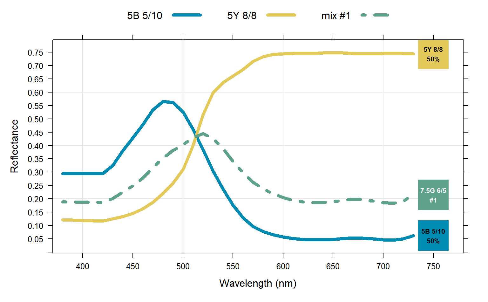

Lattice visualization demonstrating subtractive mixtures of colors in Munsell notation and associated spectra.
plotColorMixture( x, w = rep(1, times = length(x))/length(x), mixingMethod = c("reference", "exact"), n = 1, swatch.cex = 6, label.cex = 0.85, showMixedSpec = FALSE, overlapFix = TRUE )
Arguments
| x | vector of colors in Munsell notation, should not contain duplicates |
|---|---|
| w | vector of weights, can sum to any number |
| mixingMethod | approach used to simulate a mixture:
|
| n | number of closest mixture candidates when |
| swatch.cex | scaling factor for color swatch |
| label.cex | scaling factor for swatch labels |
| showMixedSpec | show weighted geometric mean (mixed) spectra as dotted line (only when |
| overlapFix | attempt to "fix" overlapping chip labels via |
Value
a lattice graphics object
Details
If present, names attribute of x is used for the figure legend.
Author
D.E. Beaudette
Examples
# color chips chips <- c('5B 5/10', '5Y 8/8') names(chips) <- chips # weights wt <- c(1, 1) plotColorMixture( x = chips, w = wt, swatch.cex = 4, label.cex = 0.65, showMixedSpec = TRUE, mixingMethod = 'reference' )plotColorMixture( x = chips, w = wt, swatch.cex = 4, label.cex = 0.65, mixingMethod = 'exact' )